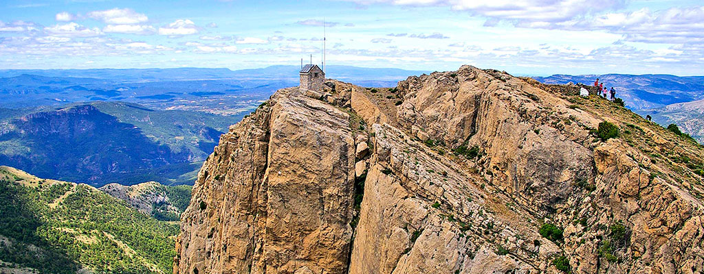

Castellón
Rutas de media montaña, bosques mediterráneos y pueblos de interior con bajo impacto turístico.
Ver rutas en CastellónEcoturismo y Senderismo Responsable
Explora parajes naturales protegidos de Alicante, Castellón y València fomentando el transporte limpio, el respeto a la biodiversidad y el desarrollo rural sostenible.
Selecciona un territorio para conocer sus espacios naturales protegidos:

Rutas de media montaña, bosques mediterráneos y pueblos de interior con bajo impacto turístico.
Ver rutas en Castellón
Humedales costeros, vías verdes accesibles en bicicleta y senderos fluviales conectados por tren.
Ver rutas en València
Sierras prelitorales, microrreservas de flora autóctona y miradores mediterráneos.
Ver rutas en AlicanteAntes de salir a la montaña, consulta nuestras recomendaciones básicas de conservación:
Fomentamos el acceso universal a zonas verdes seguras y la protección del patrimonio natural y cultural valenciano.
Promovemos el uso sostenible de los ecosistemas terrestres y la sensibilización ciudadana frente a la pérdida de biodiversidad.